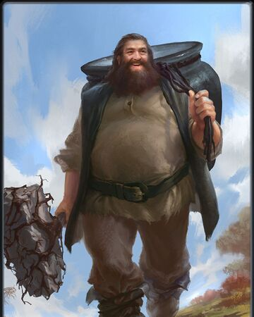
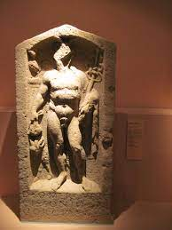
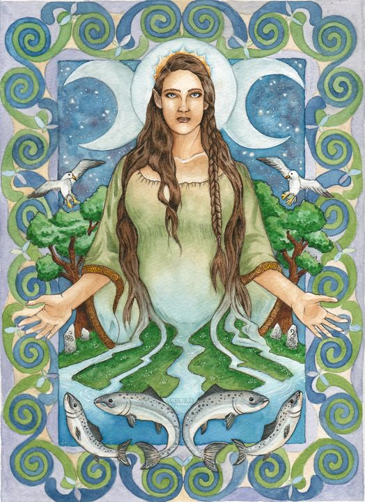
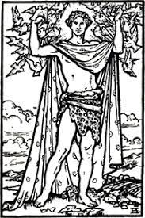
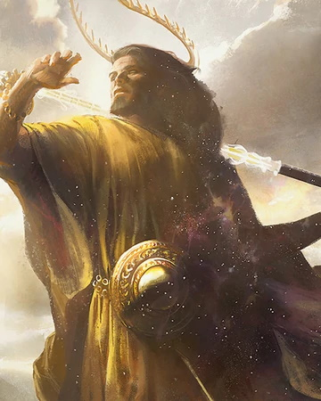

Celtic civilization thrived between 800BCE and 300BCE, and had many fascinating parts, though this website will focus on Celtic religion.
The Celts believed that the the woods had power, and that trees were spiritual objects. Particulary, Celts believed that oak trees were doors to other worlds, and that they held spirits within. In Celtic religion, misltetoe is sacred, and a powerful charm against evil and misfortune. Celts were polytheistic, having gods such as:
The Dagda, the leader of the clan of gods in Celtic religion, who had a giant cauldron as his symblol. The Dagda is the god of druids, magic, wisdom, agriculture, death, life, time and the seasons. The Dagda was said to have a club or mace, with which he could kill nine people, and with the handle of the club he could ressurect them. The Dagdas cauldron was said to be able to never run out, and if you ate from it you would be fulfilled.
Cissonius, a god of trade and possible protecter of trevellers. Cissonius has been associated with Mercury. Cissonius does not have a wealth of sources to draw from, so I can't say more without the risk of being wrong. Though it may seem Cissonius was unimportant, with there being so little on him, he did play a critical role, as the god of trade he was prayed to during trade and travel. The Celts were known far and wide for their amazing jewlry, and traded with romans constantly. With no symbol for their trading, Celtic trading could never have taken off as much as it did, in my opinion.
Anu or Danu, This god is commonly thought to be the celtic mother god, and matriarch of the clan of gods. she is associated with flowing rivers, the land, and crops. While Anu and Danu sound similiar, they might be different. In some texts Anu and Danu are the same, in some they are not, though sharing almost identical features and traits. If we accept that they are the same, then the Paps of Anu, irish hills associated with Anu, also become the paps of Danu. There are many things like this, where Danu and Anu are different, though also with equal or more texts showing them to be the same. we will just never know the truth.
Aengus, the Celtic god of youth and love, who always had four birds flying around his head. Aengus was also the god of poetic inspiration. Aengus is a bit more Irish than most gods in this website, though still quite Celt. Aengus is the son of The Dagda, though he was raised by Midir, the prince of the clan of gods, and son to The Dagda.
Belenus, the Celtic sun god, was one of the most widely worshipped Celtic gods. Belenus even gained scriptures from two Roman emperors, Maximian and Diocletian. Belenus was so widespread that he became the patron god of Noricum, the Roman province that spread from most of modern day Austria to parts of modern day Slovenia. Belenus is associated with the horse, and is said to ride a horse in the sky. Belenus was commonly mistaken for Apollo, and over time their personalities fused with and changed each other.
The Celts did not see their gods as being humanoid until the late iron age. Celts mostly worshipped their gods in sacred groves called nemetons, were thay would put carvings of wood spirits and gods. Celts had many holidays, though one that is still practiced today is yule, the drunken predecessor to christmas. In many stories, it is said the gods lose their powers and become the first fairies.
Sources used to clarify information found durin research stage: https://en.wikipedia.org/wiki/The_Dagda en.wikipedia.org/wiki/List_of_Celtic_deities https://en.wikipedia.org/wiki/Cissonius https://www.realmofhistory.com/2018/07/02/ancient-celtic-gods-goddesses-facts/ https://en.wikipedia.org/wiki/Anu_(Irish_goddess) https://en.wikipedia.org/wiki/Belenus https://en.wikipedia.org/wiki/Celts https://en.wikipedia.org/wiki/Aengus https://en.wikipedia.org/wiki/Midir